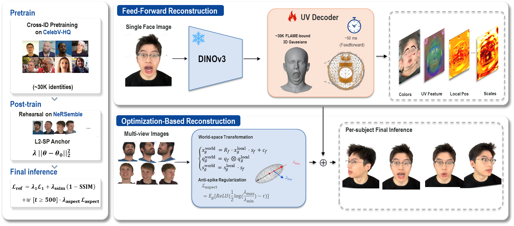

Demonstrations
In ID
| Ours | GAGAvatar | CVTHead | GPAvatar | Portrait4D-v2 |
|---|---|---|---|---|
Cross ID
| Reference | Driving | Ours | GAGAvatar | CVTHead | GPAvatar | Portrait4D-v2 |
|---|---|---|---|---|---|---|
 |
||||||
 |
||||||
 |
||||||
 |
High-quality 4D head avatars from one or a few source portraits are central to telepresence, AR/VR, and digital-human interaction. 3D Gaussian Splatting (3DGS) has emerged as the dominant representation, with two complementary regimes (generalizable feed-forward predictors and per-subject refiners) maturing in parallel. However, existing feed-forward predictors are trained on a single dataset family with a hard-coded source count, inheriting the corresponding domain bias. Per-subject refiners require 300K--600K iterations and rely on adaptive densification that destroys upstream Gaussian layouts, preventing the two regimes from sharing a representation end-to-end. To bridge both regimes we propose SpatialAvatar-0 on a shared FLAME-mesh-bound Gaussian representation: a feed-forward generator with a parameter-free K-source mean-pool and a monocular-temporal → multi-view-spatial two-phase schedule that anchors against identity-prior collapse onto the smaller multi-view set. We further introduce a 10K-iter layout-preserving per-subject refinement loop that freezes the FLAME-binding and Gaussian count and replaces densification with a three-component anti-spike regularization. On VFHQ/HDTF cross-domain zero-shot we surpass the in-domain leader GAGAvatar by +1.5 dB PSNR despite never training on either test domain, and on the SplattingAvatar monocular benchmark we lead every reported metric, surpassing the 300K-iter GeoAvatar by +1.3 dB PSNR at up to 60× shorter per-subject schedule than common SOTA baselines.
A K-source-variable feed-forward FLAME-mesh-bound Gaussian generator with a monocular → multi-view two-phase training schedule, anchored by L2-SP and a 25% NeRSemble cross-time mix against identity-prior collapse on the smaller multi-view set.
A 10K-iter layout-preserving per-subject refinement loop with a three-component anti-spike regularization replacing densification, leading every reported metric on the SplattingAvatar leaderboard at up to 60× shorter schedule than common SOTA per-subject baselines.
Comprehensive cross-domain and per-subject experiments on VFHQ, HDTF, and the SplattingAvatar monocular benchmark, with ablations validating every design choice.

We frame head avatar reconstruction as two coupled stages over a shared FLAME-mesh-bound 3D Gaussian representation. Stage 1 (feed-forward): a single network fθ ingests K ∈ {1,2,3,4} source portrait images and emits face-bound 3D Gaussians in one forward pass. Stage 2 (optional per-subject optimization): starting from fθ's output for a chosen reference frame, we run 10K iterations of photometric refinement against the target video. Stage 1 is trained in two phases on the same architecture: monocular-temporal pretraining (Phase 1, CelebV-HQ) and multi-view-spatial post-training (Phase 2, NeRSemble); the variable source count K ∈ {1,2,3,4} during training exposes fθ to monocular and multi-view contexts within a single training distribution.
| Ours | GAGAvatar | CVTHead | GPAvatar | Portrait4D-v2 |
|---|---|---|---|---|
| Reference | Driving | Ours | GAGAvatar | CVTHead | GPAvatar | Portrait4D-v2 |
|---|---|---|---|---|---|---|
|
||||||
|
||||||
|
||||||
|
@article{wang2026spatialavatar,
title={SpatialAvatar-0: High-Quality 4D Head Avatar with Multi-Stage Reconstruction},
author={Wang, Yiran and Zhang, Zeyu and Li, Yuanming and Wang, Ziming and Zhao, Yang},
journal={arXiv preprint arXiv:2606.15659},
year={2026}
}